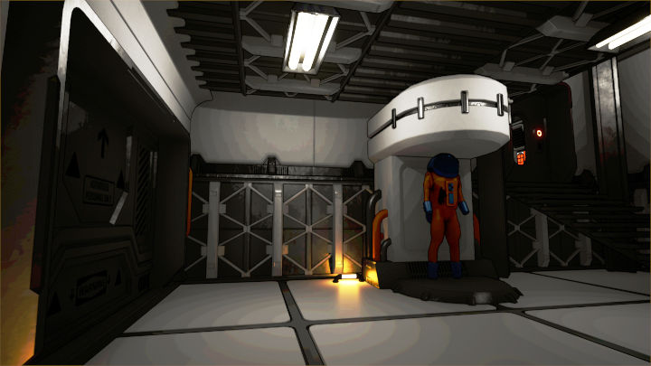
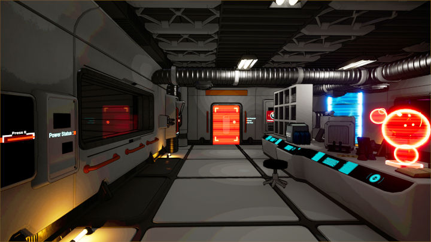
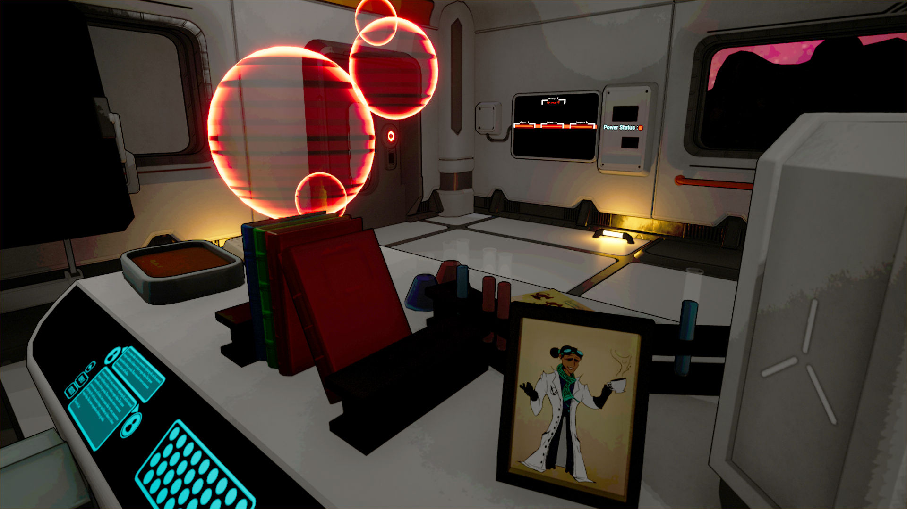
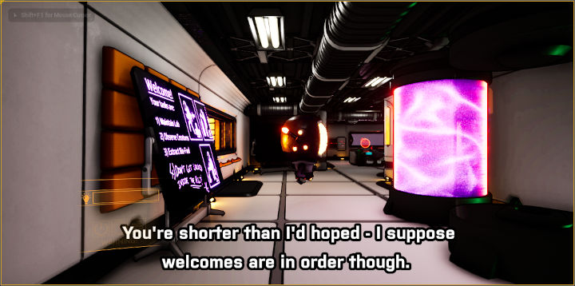
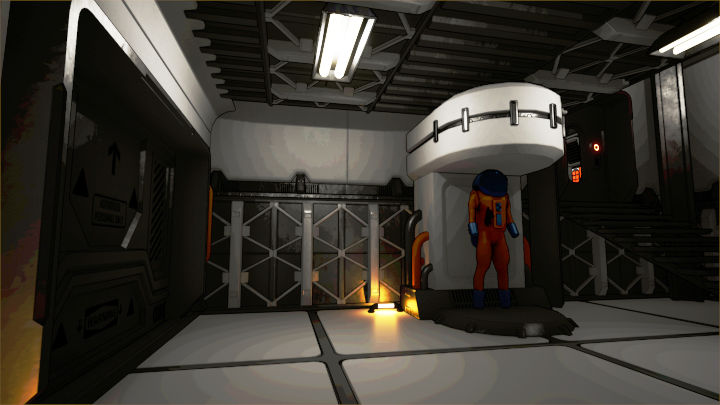
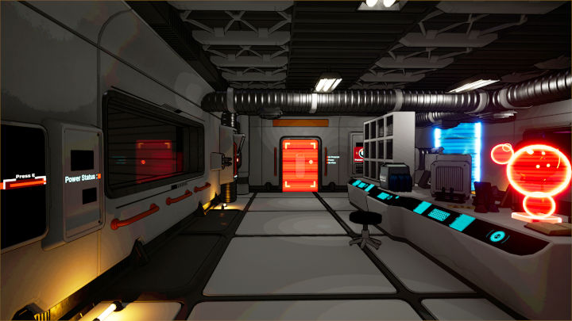
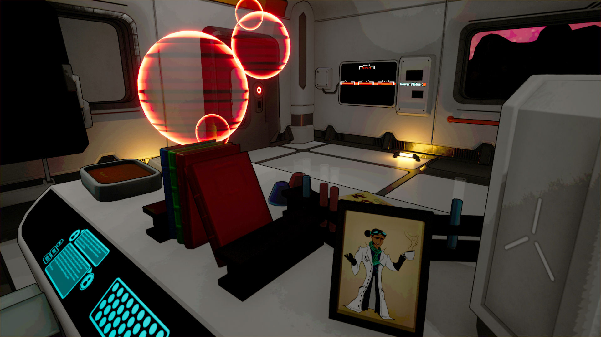
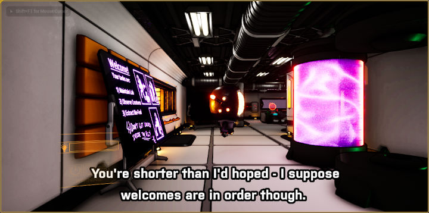

Produced at Abertay University over the course of three months by RealmWelder, Vivarious is a prototype evolution sim, developed in Unreal Engine 4 for the University of St Andrews as part of a class project.
In Vivarious, players take the role of an assistant biologist on a space station, studying the recently discovered alien species of "Varium". In order to feed their young, Varium convert some of the food they eat into a honey, which forms as crystaline structures around the nest.
Preliminary research into Varium suggests that this honey has properties that could lend it to be a viable, renewable energy source to replace the dwindling fossil fuel supply. As such, it is the player's task to manage the ecosystem housing the Varium, in order to collect as much honey as possible for use as testing samples.
My Role at RealmWelder
For the duration that RealmWelder was active, I served as "Technical Director" on the Vivarious project. This role was a mix of Agile project management, for any programming or engine implementation tasks; gameplay programming, with implementing new features; and supporting team members less experienced with UE4.
One of the more notable features I worked was the dynamic subtitle system. In order to aid in accessibility, and to avoid falling into the traps that video game subtitles have garnerd a reputation for, I produced an in-engine subtitle solution following official Netflix and BBC formatting guides.
 






